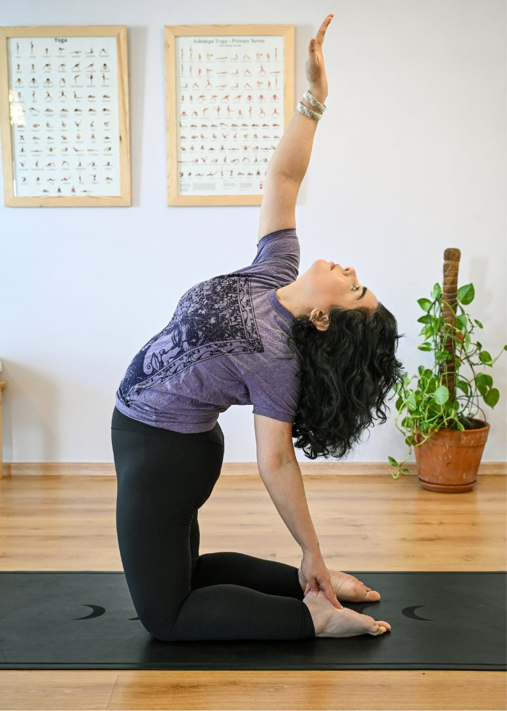
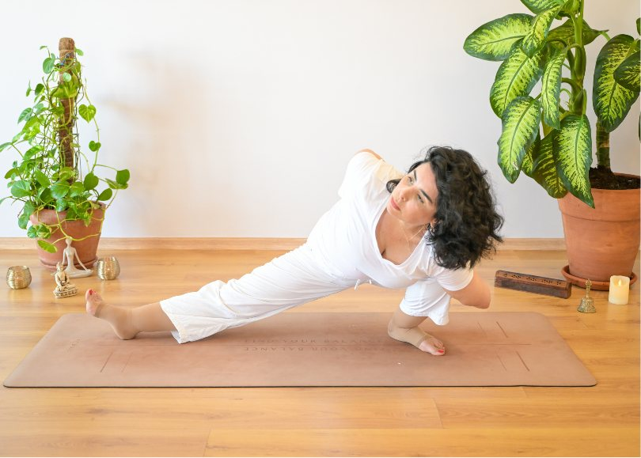
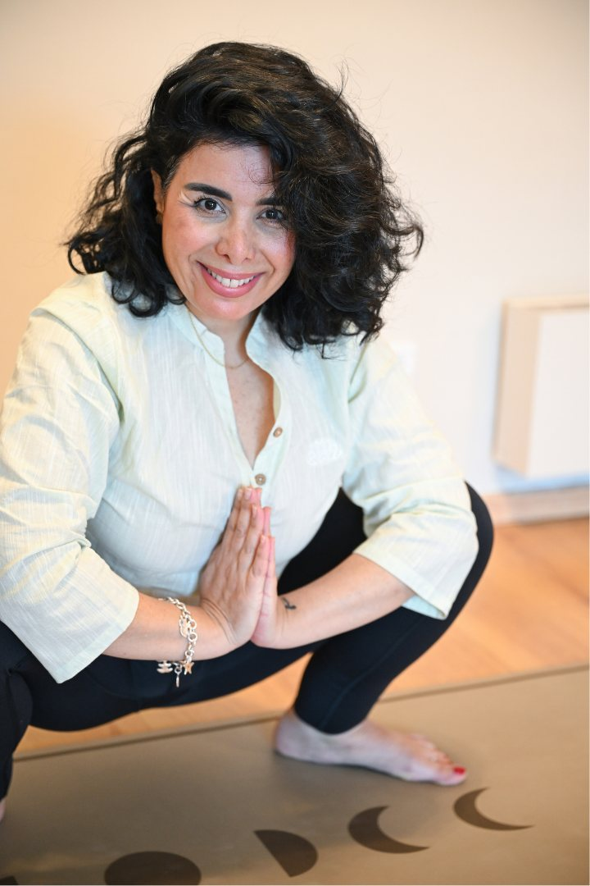
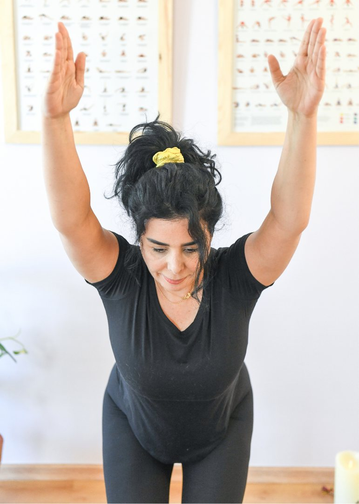
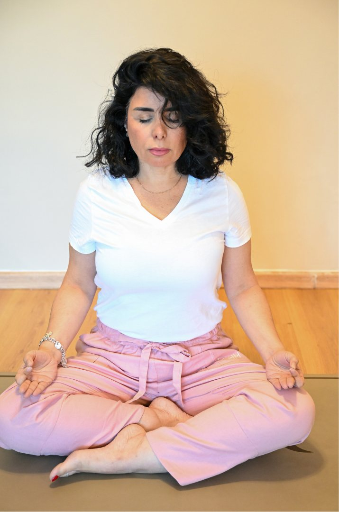
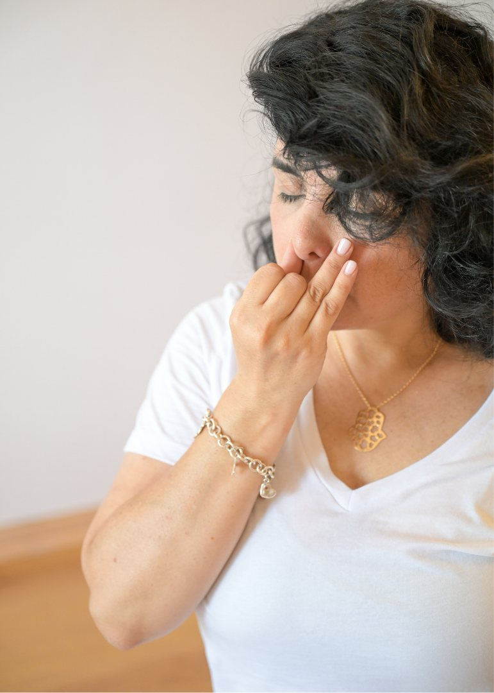
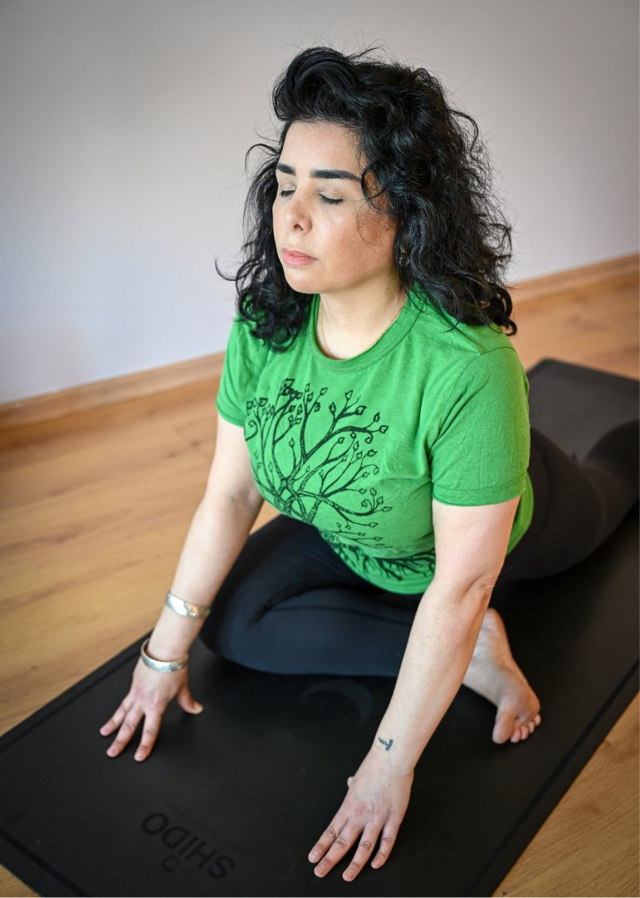
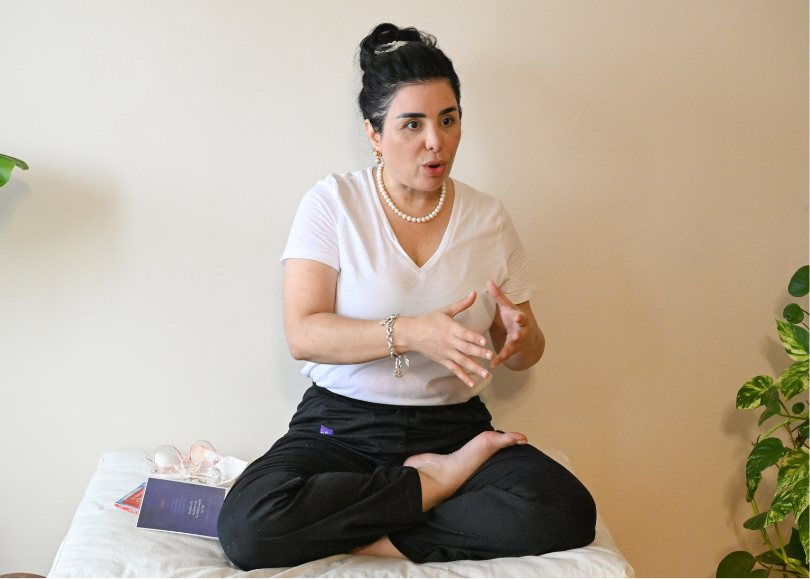

Core practice

01
Hatha Yoga
Postures, breathing techniques, alignment, strength, mobility and stability.
Yoga is taught as a structured discipline combining posture, breath, strength, mobility, stability and awareness. All classes take place in person at SHIDO, Casablanca.

Each practice answers specific needs while sharing the same commitment to precision, safety, breath and progression.

Postures, breathing techniques, alignment, strength, mobility and stability.

The foundations of Yoga: posture, breathing, coordination and progressive learning.

Core strength, postural stability, motor control and coordination through Yoga.

Sustained postures, breathing, observation and body awareness.

A Yoga practice adapted for individuals with hypertension or cardiovascular conditions, in accordance with medical recommendations.
Practised alongside your medical follow-up, never instead of it.

An adapted approach to mobility, balance, functional strength and independence.

36B, Boulevard d'Anfa
Casablanca, Morocco